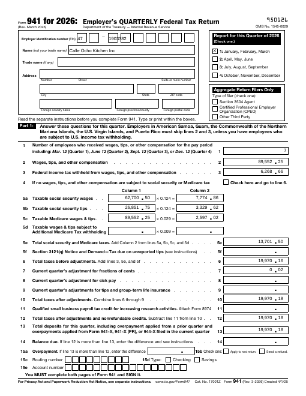
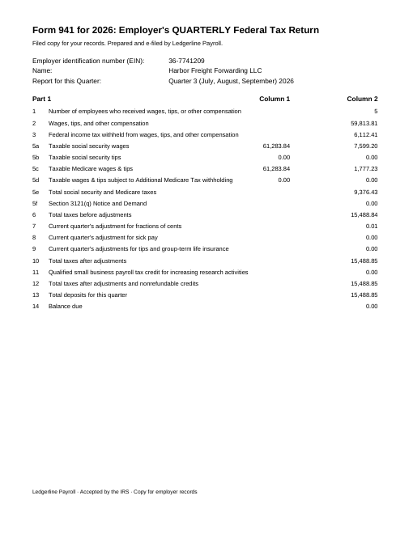
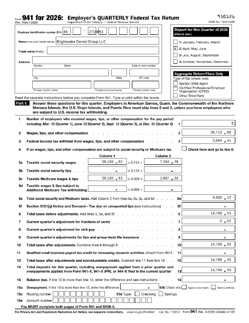

What it reads
Four ways a 941 reaches your desk
The tool reads what was filed, not a summary someone retyped. Separate files or one year-end packet both work.
Filled-in IRS form
Values live in the PDF's form fields.
✓ read
Printed copy
The IRS form with the numbers printed on, as most providers deliver it.
✓ read
Provider's own layout
A "filed copy" page in the provider's design, using the IRS line wording.
✓ read
Scan or photo
No text inside. The tool says so, names the file, and asks for the filed PDF.
✗ cannot read
Pages from the test files: official 2026 IRS Form 941, invented employers.